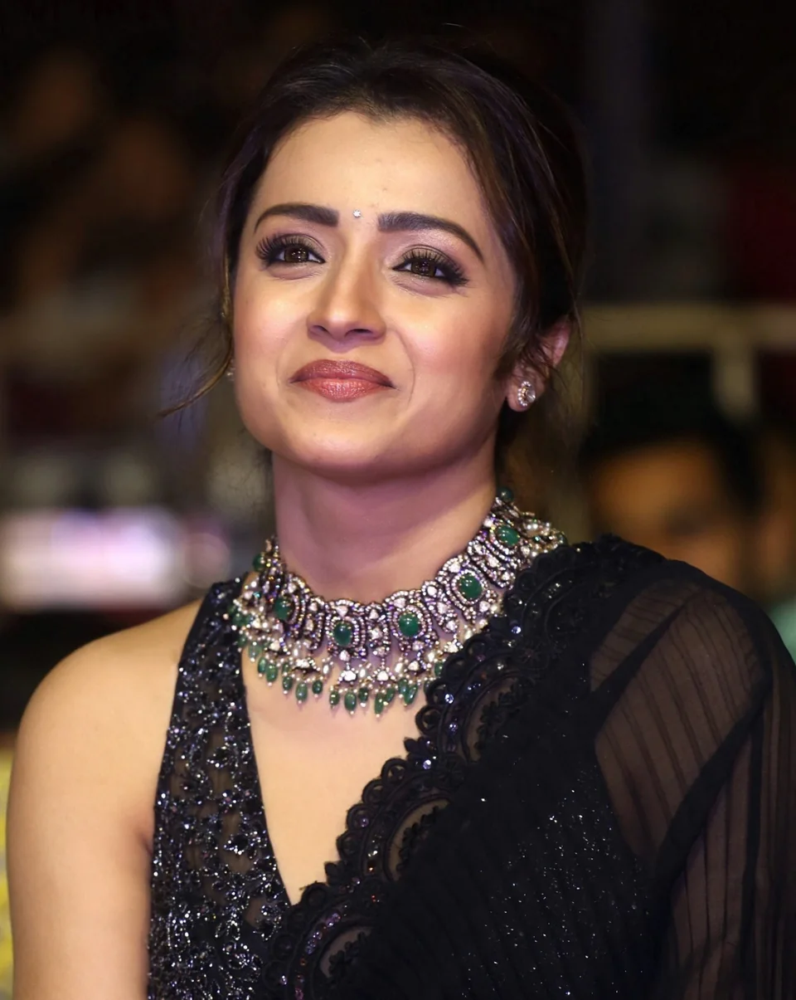
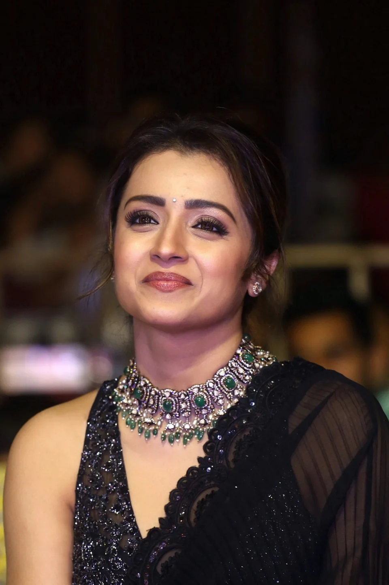
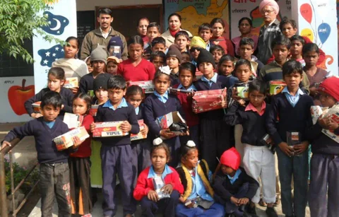

சமூக சேவை
இரத்த தானம், கற்றல் உதவி, தூய்மைப் பணிகள் மற்றும் அன்றாட தேவைகளுக்கு ஆதரவு.
ஒரு மக்கள் சார்ந்த தமிழ் சமூகம்
திரிஷா பேரவை ஒரு சுயாதீன, ரசிகர்-முன்னெடுப்பு சமூகம். தமிழ்க் கலை, கல்வி, பெண்கள் முன்னேற்றம் மற்றும் அன்றாட சமூக சேவையை மையமாகக் கொண்டு, அன்பால் ஒன்றிணையும் மக்களின் இடம்.


படம்: உரிமம் பெற்ற நிகழ்வுப் புகைப்படம்எங்களைப் பற்றி
ஒரு நடிகையின் பணியை மெச்சுவது மட்டுமல்ல — அந்த அன்பை மரியாதையாகவும், பயனுள்ள பங்களிப்பாகவும் மாற்றும் முயற்சி.
திரிஷா கிருஷ்ணனின் திரைப்பயணம் பலருக்கு ஊக்கம். அந்த ஊக்கத்தை ஒரு பொறுப்பான சமூகமாக மாற்ற விரும்புகிறோம்: மற்றவர்களை மதிக்கும், கலையைக் கொண்டாடும், தேவைப்படுவோருக்கு உதவும் இடமாக.
எங்கள் வழிகாட்டி: மக்கள், பண்பாடு, நாம் வாழும் இடங்கள் மீதான மரியாதை.எங்கள் கதையைப் படிக்க
நோக்கம் & பணி
பெரிய வாக்குறுதிகள் அல்ல — சிறிய, நிலையான, பொறுப்பான படிகள்.
இரத்த தானம், கற்றல் உதவி, தூய்மைப் பணிகள் மற்றும் அன்றாட தேவைகளுக்கு ஆதரவு.
பரதநாட்டியம், பொங்கல், தமிழ் இலக்கியம் மற்றும் உள்ளூர் கலைஞர்களுக்கு இடம்.
தலைமைத்துவம், திறன் வளர்ச்சி மற்றும் பாதுகாப்பான, மரியாதையான பங்கேற்பு.
மரம் நடுதல், கடற்கரை தூய்மை மற்றும் நமது இடங்களைப் பொறுப்புடன் பாதுகாத்தல்.
சமூகம்
இவை திட்டமிடப்பட்ட சமூக முன்முயற்சிகளின் எண்ணங்கள்; உறுதிப்படுத்தப்பட்ட அறிவிப்புகள் அல்ல.
மொழி, திறன் மற்றும் பள்ளி பாடங்களில் சிறிய குழு ஆதரவு.
உள்ளூர் தேவைகளுக்கு ஏற்ப ஒரு நாள் சேவை முன்முயற்சிகள்.
இசை, நடனம், வாசிப்பு மற்றும் உரையாடலுக்கான மாலை நிகழ்வுகள்.
சுத்தம், பசுமை மற்றும் சிறு உதவிகளில் கவனம்.
படத்தொகுப்பு
உரிமம் பெற்ற புகைப்படங்கள் வழியாக திரிஷாவின் தருணங்களும் தமிழ் பண்பாட்டின் வண்ணங்களும்.
அனைத்துப் புகைப்படங்களும் Wikimedia Commons-இல் இருந்து உரிமத்துடன் பயன்படுத்தப்படுகின்றன.
செய்திகள்
சிறு செய்திகள், திட்ட எண்ணங்கள், சமூகக் குரல்கள்.
 மாதிரி
மாதிரி
கருத்துகள், எதிர்பார்ப்புகள் மற்றும் தன்னார்வத் திட்டங்களுக்கான அமைதியான அறிமுகச் சந்திப்பு.
 மாதிரி
மாதிரி
பாரம்பரிய கலைகளையும் இளைய கலைஞர்களையும் இணைக்கும் ஒரு மாலை நிகழ்வு பற்றிய எண்ணம்.

மாதிரிகடற்கரையைப் பாதுகாக்கும் சிறிய, பாதுகாப்பான குழு முயற்சி.
கீழே உள்ளவை வடிவமைப்பிற்கான மாதிரி உள்ளடக்கம். உண்மையான அரசியல் அறிவிப்புகள் அல்ல.
பங்கேற்பு
பெரிய உறுதிமொழிகள் தேவையில்லை. ஆர்வம், மரியாதை, சிறிது நேரம் — இவை போதும்.
உங்கள் ஆர்வத்தைப் பதிவு செய்யுங்கள். எந்தக் கட்டணமும் இல்லை.
உங்களுக்குப் பொருந்தும் தன்னார்வ அல்லது கலைச் செயலில் இணையுங்கள்.
கருத்துக் கூறுங்கள், தலைமை ஏற்கவும், மற்றவர்களுக்கு வழிகாட்டவும்.
பெரிய உறுதிமொழிகள் தேவையில்லை. ஆர்வம், மரியாதை, சிறிது நேரம் — இவை போதும்.
உங்கள் ஆர்வத்தைப் பதிவு செய்உறுப்பினர் படிவம் தற்போது மாதிரி மட்டுமே; README-ல் பின்தள இணைப்பு பற்றி அறிக.
தமிழ் கலை, கல்வி மற்றும் சேவைக்கான ஒரு பொறுப்பான சமூகத்தை ஒன்றாக உருவாக்குவோம்.